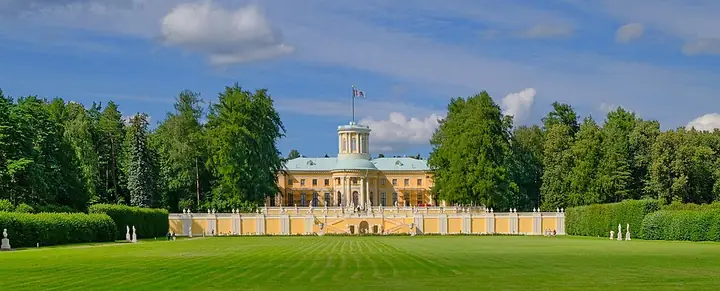

Фото: Ghirlandajo, CC BY-SA 4.0 · Wikimedia Commons
Музей-усадьба · Подмосковье
Усадьба Архангельское
«Подмосковный Версаль» Юсуповых: дворец, террасы и регулярный парк. Сразу за МКАД.
- ₽₽ · 1 500–3 000 ₽ на человека
- в 2 планах
Позвать сюда: Усадьба АрхангельскоеОткрыть в каталоге: Усадьба АрхангельскоеМаршрут до места: Усадьба Архангельское
Адрес и детали
- Адрес
- Ильинское ш., Красногорск
Открыть на Яндекс Картах (в новой вкладке) - Метро
- м. Мякинино
- Округ
- Подмосковье
- Цена
- 1 500–3 000 ₽ на человека
- Проверено
- работает — проверили в октябре 2026
Планы с этим местом 2
- Усадьба Архангельское · Музей-усадьба · м. Мякинино
Дворец Юсуповых, террасы и регулярный парк сразу за МКАД.
Открыть план: Подмосковный ВерсальПозвать сюда: Подмосковный Версаль
Фото: Ghirlandajo, CC BY-SA 4.0 · Wikimedia Commons
- Усадьба Архангельское · Музей-усадьба · м. Мякинино
Дворец, террасы и регулярный парк Юсуповых сразу за МКАД, осенью парк жёлто-красный. Это на весь день.
Открыть план: Подмосковный Версаль в золотеПозвать сюда: Подмосковный Версаль в золоте
Фото: Ghirlandajo, CC BY-SA 4.0 · Wikimedia Commons
Как позвать
- Выбери план, место или событие — в карточке адрес, цены и маршрут в Яндекс Картах.
- Нажми «Позвать сюда» — соберётся приглашение-игра для свидания или голосование для компании.
- Отправь ссылку в любой мессенджер: тебе ответят, а компания отметит, куда и когда может. Бесплатно и без регистрации.